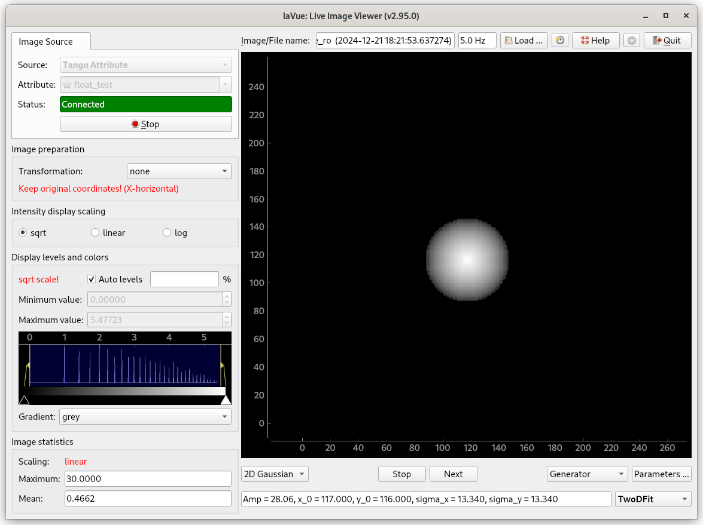

TwoDFit Tool¶
TwoDFit Tool performs a fit of 2D function e.g. Guassian.

combobox with a fitting function, i.e. 2D Gaussian
Fit/Stop - switches on/off continuous mode of 2d fitting
Next - (re-)computes a diffractogram for the current image
combobox with a initial parameter fitting mode i.e. generator, user, last_generator, last_user, nofit.
Parameters.. user initial parameters.
The configuration of the tool can be set with a JSON dictionary passed in the --tool-configuration option in command line or a toolconfig variable of LavueController.LavueState with the following keys:
initial_parameters (float list), parameters_mode (generator, user, last_generator, last_user or nofit string), fit (bool), next (bool)
e.g.
lavue -u twodfit -s test --tool-configuration \{\"initial_parameters\":[30,100,100,20,20,0,0],\"parameters_mode\":\"user\",\"fit\":true\} --start
A JSON dictionary with the tool results is passed to the LavueController or/and to user functions plugins. It contains the following keys:
tool : “twodfit”, imagename (string), timestamp (float), user_initial_parameters ([float, float,… ,float]), initial_parameters ([float, float,… ,float]),, parameters_names ([str, str,… ,str]), fitted_parameters ([float, float,… ,float]), parameters_mode ([float, float,… ,float]), covariance_matrix ([[float, float,… ,float], …]), condition_number (float), parameters_mode (string)